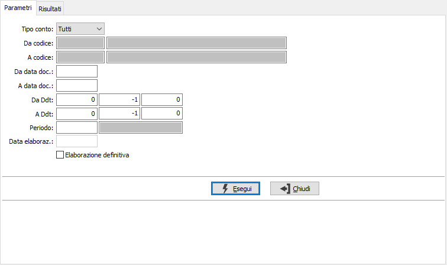
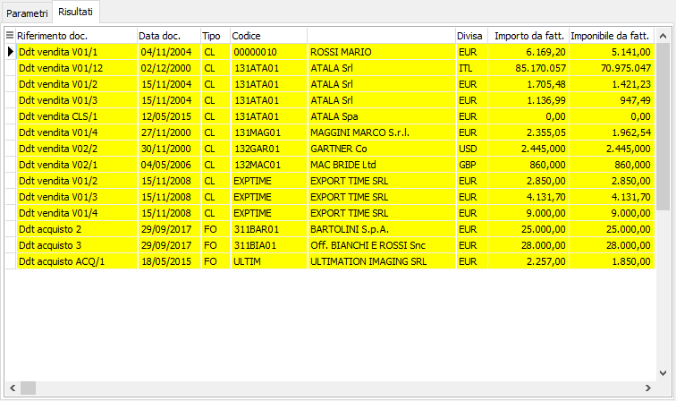

Fatture da ricevere/emettere
Il programma consente di generare automaticamente le scritture extracontabili derivanti da DDT di vendita e DDT di acquisto non fatturati nel periodo. Per avere una quadratura economica corretta è stato introdotto nei DDT (sia di vendita che di acquisto) il periodo di competenza a livello di testa/rigo documento; tale funzionalità viene attivata in funzione del parametro “Gestione date di competenza” presente nelle configurazioni “Vendite” e “Acquisti”.

Nei parametri di selezione è possibile impostare i sottoconti, clienti o fornitori con possibilità di selezione di un gruppo di conti, o entrambi senza possibilità di selezione; è possibile specificare un periodo di date oppure un range di documenti utilizzando i parametri per anno, serie, numero; tramite la casella di spunta è possibile effettuare una elaborazione di prova che effettua solo la selezione senza possibilità di generazione, oppure una elaborazione definitiva che consente di effettuare il salvataggio dei movimenti; in caso di elaborazione definitiva è necessario indicare il periodo che sarà utilizzato per la generazione dei movimenti, la data di elaborazione sarà mostrata in automatico in base al periodo .
Nella griglia dei Risultati vengono riportati i documenti elaborati ed i relativi importi calcolati, già selezionati per la generazione; con il doppio clic del mouse o tramite il menù del tasto destro del mouse sulla griglia sarà possibile modificare le selezioni oppure accedere direttamente al documento indicato.

La funzione di generazione rettifiche elabora i DDT da fatturare e genera un movimento di rettifica per ogni documento utilizzando come contropartita i conti “Fatture da emettere” e “Fatture da ricevere” inseriti nella configurazione “Codici fissi” assegnandolo al periodo di bilancio indicato nei parametri; ogni volta che la funzione viene eseguita vengono cancellati tutti i movimenti di tipo “Fatture da ricevere” e/o “Fatture da emettere” già presenti per il periodo richiesto.
Tramite i pulsanti presenti nella Toolbar sarà possibile effettuare la stampa e, in caso di elaborazione definitiva, effettuare il salvataggio con conseguente generazione dei movimenti.